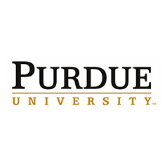

Universidad de Purdue - EUA
Escrito 20/10/2008 por: Admin
Desde el 2008, este acuerdo permite el intercambio de estudiantes y docentes d e ambas instituciones, así como la investigación aplicada y el trabajo colaborativo entre otras actividades de cooperación académica.